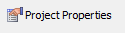
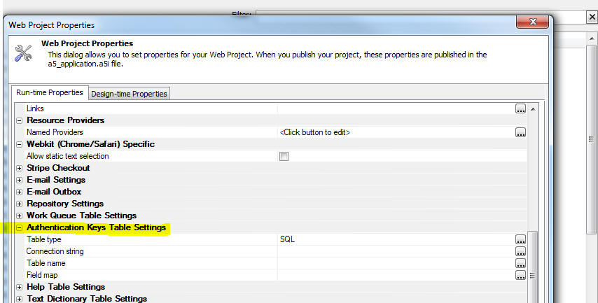

Alpha Anywhere makes working with data in Salesforce very easy. There are two ways in which you can work with Salesforce
Regardless of which method you choose, you will first need to do some setup work.
The first task that you must complete is define a new "connected application" in your Salesforce account. You will then need to define a Named Resource in your Alpha Anywhere project.
| Salesforce | Creating a Salesforce Connected Application |
Before you can work with Salesforce data in an Alpha Anywhere application, you must first define a new Connected Application
in your Salesforce account and a Named Resource in your Alpha Anywhere Web Project.
This video walks through the process of creating a Salesforce Connected Application Watch Video Date added: 2018-04-06 |
| Salesforce | Creating a Named Resource Provider |
Before you can work with Salesforce data in an Alpha Anywhere application, you must first define a new Connected Application
in your Salesforce account and a Named Resource in your Alpha Anywhere Web Project.
This video walks through the process of creating a new Named Resource Provider in your Alpha Anywhere web project. Watch Video - Part 1 Watch Video - Part 2 Date added: 2018-04-06 |
| Salesforce | Making REST API Calls |
Then SalesforceAPIRequest() function makes it easy to make REST API requests to the Salesforce API. You can either make a
request directly against an endpoint documented in the Salesforce API documentation, or you can use the Salesforce
SQL like query language, SOQL, to execute queries.
In this video we show both uses of the SaleforceAPIRequest() function. Watch Video - Part 1 Watch Video - Part 2 Watch Video - Part 3 Date added: 2018-04-06 |
| Salesforce | Creating a Connection String |
You can create a Salesforce connection string (just as you create connection strings to point to SQL databases) that then
allows you to treat Salesforce as a data source for a component, or a control.
In this video we show how a Salesforce connection string can be defined and then used to create a Grid component. Watch Video - Part 1 Watch Video - Part 2 Date added: 2018-04-06 |
| Salesforce | Building a UX Component That Uses the Salesforce API |
In this video we show how a UX component can be built to display Salesforce data. The UX component does a query to retrieve
the a list of accounts from Salesforce and it displays the result in a List control. When the user clicks
on a row in the List, details for the selected account are shown by making another API request to Salesforce.
Watch Video Download component Date added: 2018-04-06 |
In order to create a new Salesforce Connected Application, log into your Salesforce account. From the navigation menu, select Apps, App Manager
At the App Manager screen, click on the New Connected App button.
This will allow you to define a new Connected App and define the properties of this App.
The essential properties that you must set include:
The callback URL is used by Salesforce after the user has logged into Salesforce to authorize the Connected Application to get back to your Alpha Anywhere application. You can define multiple callback URLs as shown in the above image. The reason you would want to define multiple callback URLs is so that you can use the same Connected Application while you are developing and testing your application and then after you deploy your application.
The callback URL is the special system page __A5ExternalAuthentication.a5w at the address where your application is deployed. So, for example, if your application has been published to https://www.myApp.com, the callback URL will be:
https://www.myApp.com/__a5ExternalAuthentication.a5w
For callback URLs that use localhost (or 127.0.0.1 - which is the same as localhost), it is not necessary to use the https scheme. However, for other callback URLs, it is necessary to use the https scheme.
Once you have set up your Connected Application, you will need to get the Consumer Key and Consumer Secret for your Connected Application. You will need these values when you define Named Providers (see below) in Alpha Anywhere
Once you have created a Connected Application in your Salesforce account, and obtained the Consumer Key and Secret for your Connected Application, the next step is to define a Named Provider for Salesforce in Alpha Anywhere. A Named Provider is simply a way of assigning a name to a set of properties (which include the Consumer Key and Secret, the Callback URL, and Scopes you are requesting from the provider).
You can define Named Providers by selecting the Tools menu when the Web Control Panel has focus.
The Named Providers that you define here are available to all Web Projects in the current Workspace.
You can also define Named Providers that are specific to the current Web Project by going to the Project Properties dialog (click the Project Properties button on the Web Projects Control Panel)

After you select the command to define Named Providers you will see the dialog shown below where you can define your Named Providers.
NOTE: The definition of a particular Named Provider can be overwritten at publish time by specifying new properties for the Named Provider in your Publishing Profile. This is similar to the way in which a Named Connection String can be re-defined at publish time.
In the above image, two Named Resources have been defined. Both have a red icon next to their name. This indicates that the user has not yet authenticated the Named Resource. If you click on the a particular Named Resource and then click the Log in button, the OAuth flow for that Named Resource will be started and you will be able to authenticate against the Provider. After you successfully log in, the red icon will change to green. At that point you will be able to perform API requests against the Provider while you are in development mode (i.e. running your application in Working Preview or Live Preview mode).
To create a new Named Resource click the New button.
When you open the Configure Named Resource Providers dialog, you might see a message at the bottom of the screen as shown below.
This is a notification that you have not defined an Authentication Keys Table for this Web Project (see below for more details).
When you authenticate a Named Provider using OAuth, the Provider will supply an access token and possibly a refresh token . The access token is used when making API requests to authorize the request. Typically the access token will expire after a certain period of time. If a refresh token is available, a new access token can be obtained without requiring the user to authenticate again. These tokens are stored in session variables, but can also be stored in a database table so that they outlive the session.
The table in which the access token and refresh token are stored is called the Authentication Keys Table. It is not a requirement that your application define an Authentication Keys Table, but it is recommended. If you do not define an Authentication Keys Table, then users of your application will need to re-authenticate the next time they use your application.
To create an Authentication Keys Table for your Web Project, click the Project Properties button on the Web Control Panel, then scroll to the Authentication Keys Table Settings section.

To create the table, click the smart field for any of the properties.
You can either create a new table, or map an existing table (as long as the existing table has all of the required fields). To create a new table, fill in the connection string, type in a table name and then click the Create Authentication Keys Table link at the bottom left of the screen.
NOTE: Before you can make requests to the Salesforce API you must first have created a Salesforce Connected Application and defined a Named Provider in your Alpha Anywhere project. Both of these topics are discussed above.
You can get more information about the Salesforce REST API at this address:
https://developer.salesforce.com/docs/api-explorer.com/docs/api-explorer/sobject
Alpha Anywhere has a special Xbasic helper function ( SalesforceAPIRequest() ) to make it easy to call various endpoints in the Salesforce REST API.
See below for more information on the SalesforceAPIRequest () function.
When you create a Salesforce connection string you are then able to interact with data in your Salesforce table using AlphaDAO (the Xbasic class that allows you to work with SQL databases). This means that you can define a named connection string (just as you would for connecting to a SQL database) and then you can build components and controls that use Salesforce as their data source.
When you create a new connection string, the Create SQL Connection String dialog is shown
Click on the smart field for the Connection Type and then select Salesforce the list of available types.
This will then bring up the Create SQL Connection String dialog for the Salesforce connection type.
There are two different ways in which you can define your Salesforce connection string. You can specify a Named Resource, or you can explicitly define your connection properties.
For instructions on how to create a Named Resource see the section ' Defining Named Providers in Alpha Anywhere'.
If you supply your Salesforce credentials here then users will not have to go through an OAuth flow to authenticate against their Salesforce account.
Please note that the Base Url. Client Id (call the Consumer Key by Salesforce), Client Secret (called by Consumer Secret by Salesforce), and Client Token will all have to be obtained by logging into your Salesforce account and retrieving the information for the Connected Application you have defined.
NOTE: If you have not already defined a Connected Application in your Salesforce account, you will need to first do so before you can create your Salesforce connection string.
The Base Url is the URL you see in the browser after you log into your Salesforce account. For example, while you might go to www.salesforce.com to login to your account, after you have logged in the base URL shown in the browser address bar might be something like: https://na78.lightning.force.com
The Client Token is obtained from Salesforce by going to the Settings page, and then selecting Reset My Security Token from the My Personal Information section, as shown in the image below.
Once you have created a Salesforce connection string you can use the connection string to query or update data in your Salesforce tables. You can use Xbasic (using the AlphaDAO object), or you can build components (e.g. Grid or UX) or controls (e.g. List control in the UX), that use Salesforce data as their data source.
For example, the following Xbasic Interactive Window session shows how you can query data in a Salesforce table. Assume that you have built a connection string for Salesforce and named the connection string mySalesforceData.
Here is the Interactive Window session (note how it is identical to the code you would have used to query a SQL database):
dim cn as sql::connection
cn.open("::Name::mysalesforcedata")
?cn.listTables() 'list all of the tables
dim sql as c
sql = "select * from Account"
?cn.execute(sql)
dim json as c
json = cn.resultset.toJSON()
?json
= [
{"Id" : "0011N00001EBYRDQA5", "IsDeleted" : "", "MasterRecordId"
: "", "Name" : "Genepoint4", "Type" : "Customer - Channel", "ParentId"
: "", "BillingStreet" : "345 Shoreline Park\u000AMountain View, CA 94043\u000AUSA",
"BillingCity" : "Mountain View", "BillingState" : "CA", "BillingPostalCode"
: "", "BillingCountry" : "", "ShippingStreet" : "345 Shoreline Park\u000AMountain
View, CA 94043\u000AUSA", "ShippingCity" : "", "ShippingState" : "",
"ShippingPostalCode" : "", "ShippingCountry" : "", "Phone" : "(650)
867-3450", "Fax" : "(650) 867-9895", "AccountNumber" : "CC978213", "Website"
: "www.genepoint.com", "Sic" : "3712", "Industry" : "Biotechnology",
"AnnualRevenue" : "", "NumberOfEmployees" : "", "Ownership" : "Private",
"TickerSymbol" : "", "Description" : "Genomics company engaged in mapping and
sequencing of the human genome and developing gene-based drugs", "Rating" : "Cold", "Site"
: "", "OwnerId" : "0051N000005j4eOQAQ", "CreatedDate" : "2018-01-25T17:04:59.000+0000",
"CreatedById" : "0051N000005j4eOQAQ", "LastModifiedDate" : "2018-02-19T21:53:38.000+0000",
"LastModifiedById" : "0051N000005j4eOQAQ", "SystemModstamp" : "2018-02-19T21:53:38.000+0000",
"LastActivityDate" : "", ..................
When you are developing and testing your application in Working Preview or Live Preview you can test your Salesforce application by logging in on the screen where you define your Named Providers . For example, in the screen shown below we see that there are two Named Resources defined for Salesforce:
After selecting one of the Named Resources , clicking the Log in button and then completing the OAuth flow, the selected Named Resource now has a green icon, indicating that the user has successfully authenticated their Salesforce account and that an access token has now been saved in the Alpha Anywhere Development environment for this Named Resource.
At runtime, however, the tokens that are saved when you authenticate from the Named Resource screen are not used. Instead, you will need to add a button to your user interface to initiate the OAuth flow to login to Salesforce.
You can use Action Javascript to define the action for your login button. Alpha Anywhere provides two actions in Action Javavascript:
Both actions are similar. The only difference is that the first action is user-specific. Each logged in user has their own access token (that presumably gives access to that specific user's Salesforce account). The second action is for use with a Named Resource that was defined with the Application Level Token property checked.
At run-time, after the user has logged in, the tokens are stored in session variables (and optionally in the Authentication Keys Table if one has been defined).
Alpha Anywhere exposes two client side events that can be defined in a UX component that are related to OAuth authentication flows.
You can use these events to perform some action that should only be done once the user has the necessary access token to access Salesforce data.
If you are building a PhoneGap application that will require the user to login to Salesforce, you will need to ensure that your application includes the InAppBrowser plugin. This is because when the OAuth authentication flow in initiated, the InAppBrowser is opened and the Salesforce login page is shown in the InAppBrowser window. Once the OAuth flow is completed, the InAppBrowser window will automatically be closed. The client-side onOAuthCompleted event will then fire.
The SaleforceAPIRequest() function can be used to make requests against the Salesforce REST API in two different ways
For more information on SOQL, click this link.
For more information on the Salesforce API (with specific examples of the endpoints for different API actions), click this link.
Syntax
P
result = SalesforceAPIRequest(C
namedResource [,C
endpoint [,C
query [,C
apiversion [,C
verb [,C
body ]]]]])
Where
If you call this function and the user is not yet logged, the return value will be:
result.error = .t.
result.errorText = "Not logged in"